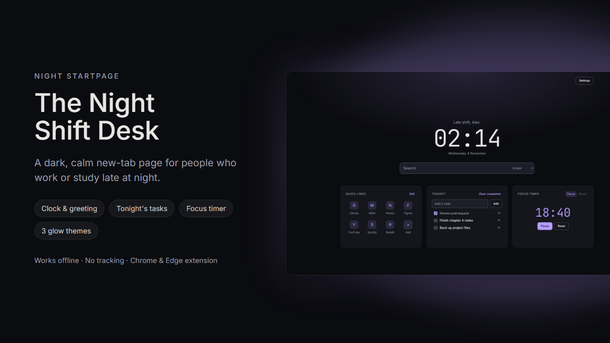
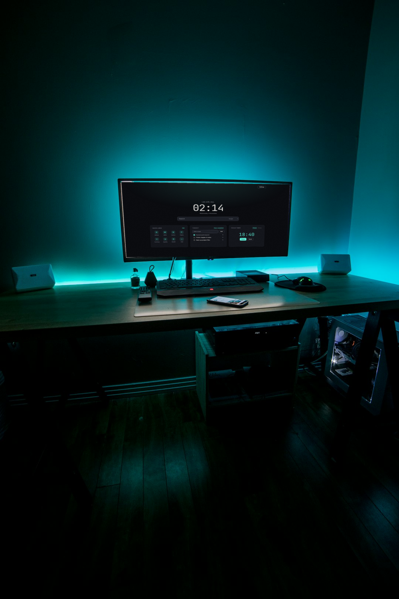
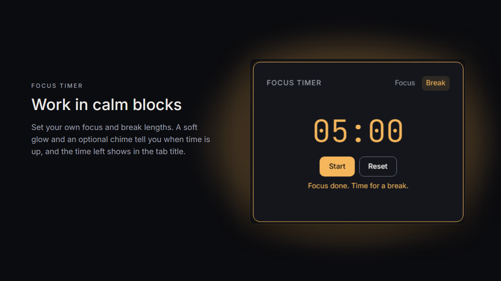
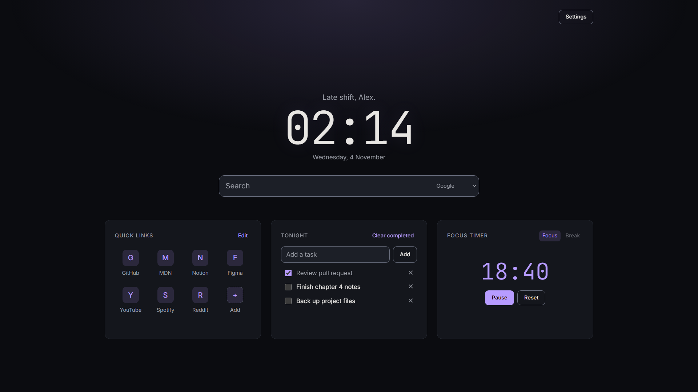
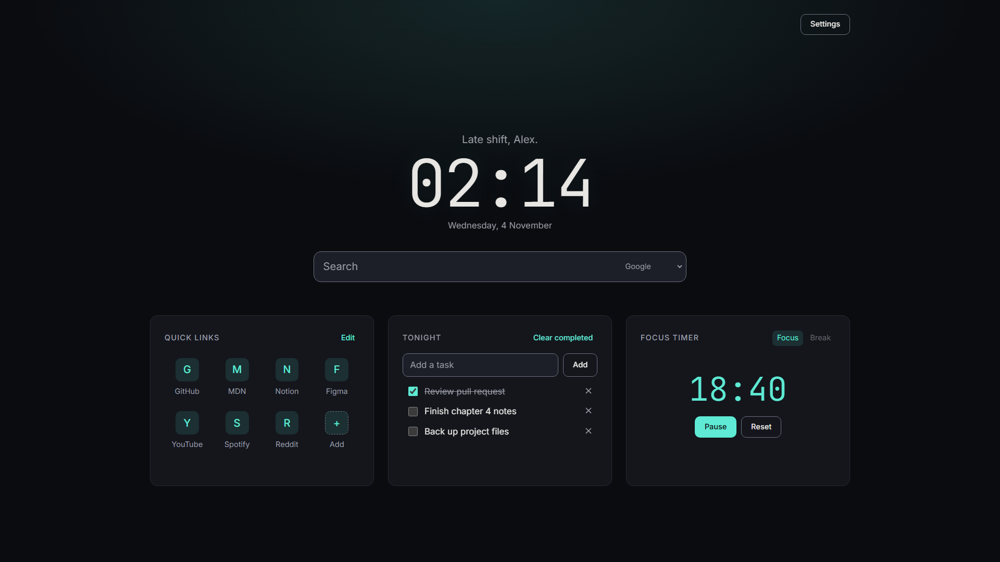
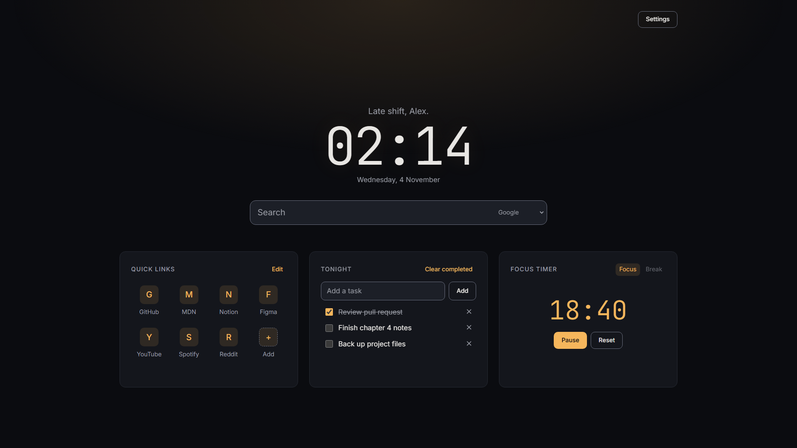
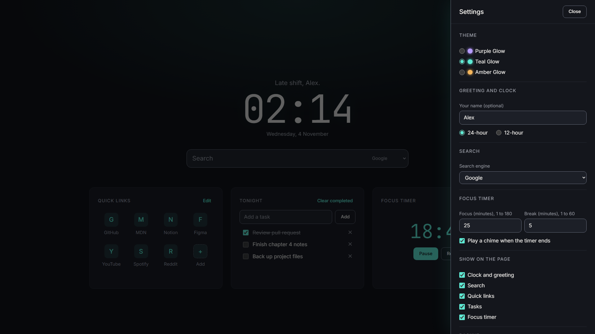
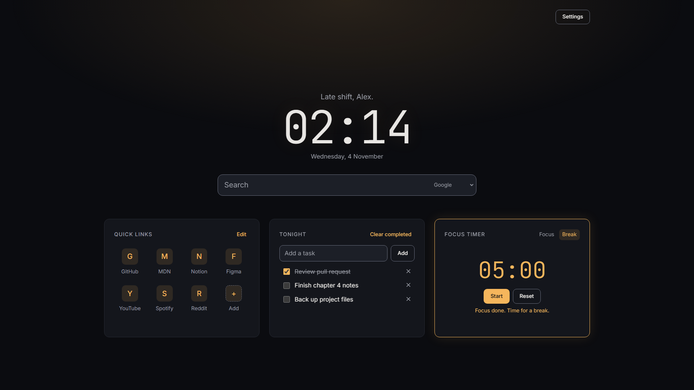
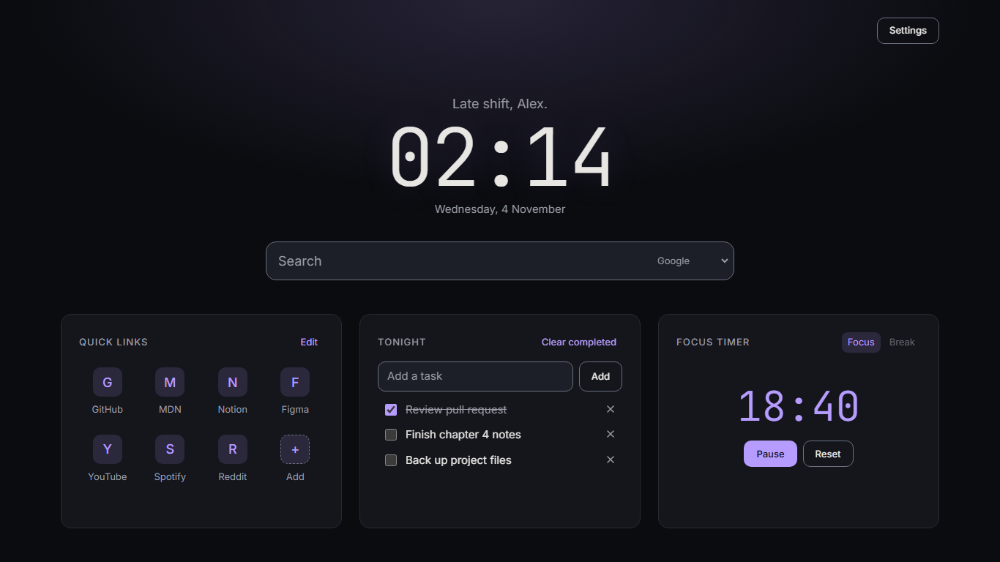
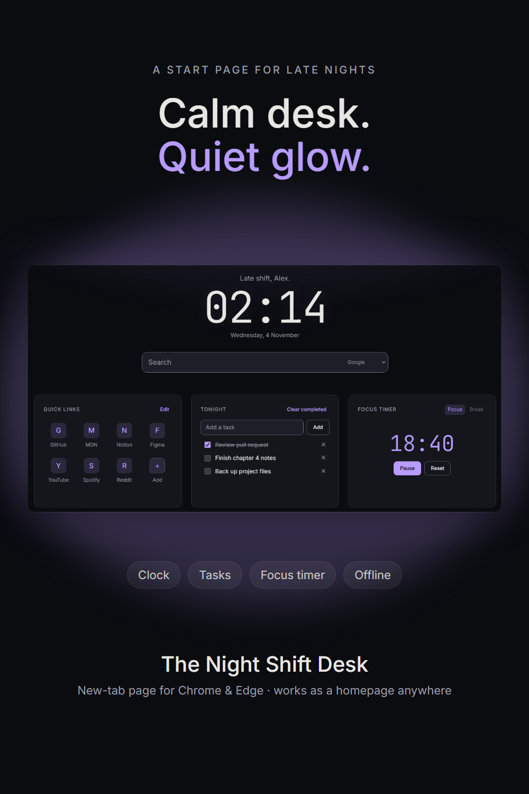

The Night Shift Desk

LIVE INTERACTIVE DEMO
23:42
Quiet hours. Zero distractions.
Focus Timer
25:00
Chrome
Firefox
Edge
Works Offline
A calm new-tab page for late nights
Turn every new tab into a calm dark workspace
Clock, search, quick links, tonight's tasks and a focus timer, in three soft glow themes. Works offline, no accounts, no tracking.
Test the live clock, focus timer, and 3 ambient themes on the left. Instant download — delivered to your email for your desktop browser.
From €7 on Gumroad Compatible with Chrome, Edge, Brave & Firefox • Apple Pay / CardInside The Night Shift Desk












